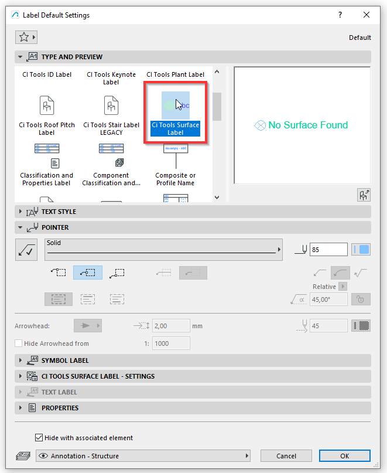
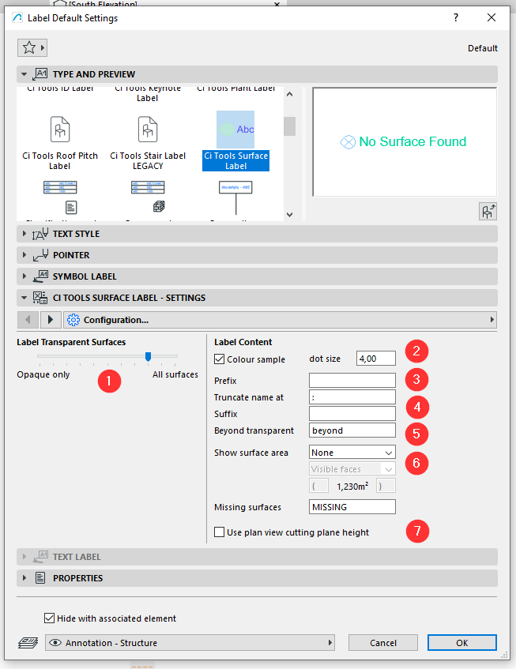
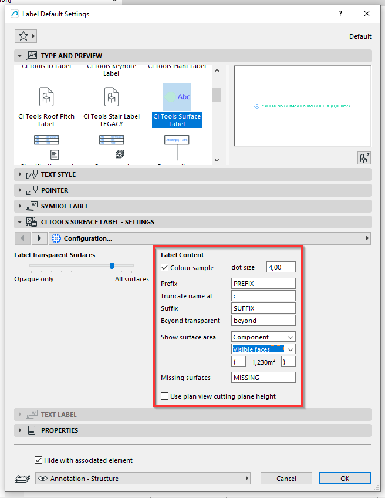
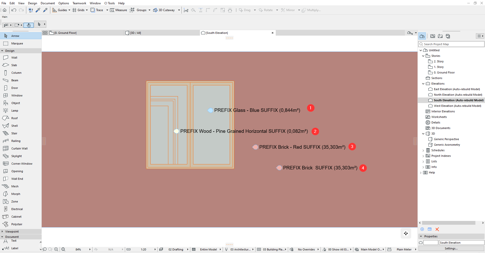
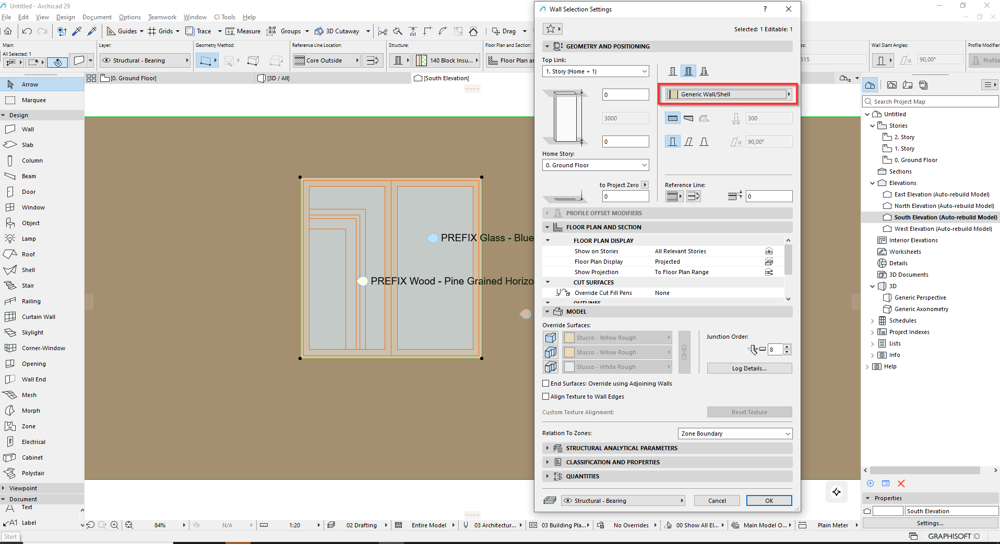
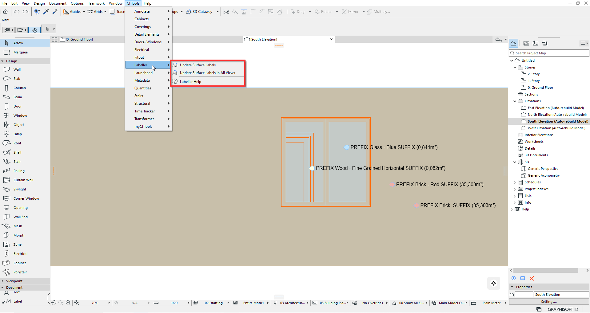
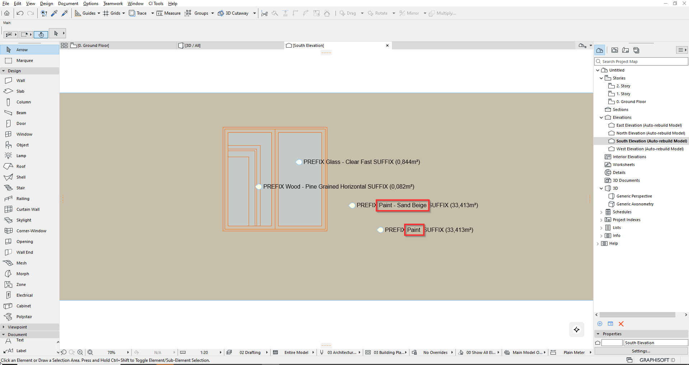

Labeller · 表面标注
表面标注的放置与更新
Labeller Tool – Placing and updating.
Labeller 是一个非常简单却好用的表面（Surface）标注工具。
和所有标注一样，它位于标注（Label）工具中，名称为 CI Tools Surface Label。

这个标注可用于任何通常使用标注的 2D 环境。
CI Tools Surface Labeller 的一些设置值得留意：

1. 调整对不透明与透明表面的敏感度：拨到右侧会标注所有表面（含透明表面），拨到左侧的 Opaque Only 则忽略透明表面。
2. 可选择是否在标注中加入表面取色圆点，并调整圆点大小。
3. 可为表面标注名称添加前缀。
4. 可指定一个字符用于截断表面名称。
5. 若标注的目标表面位于被「忽略」的透明表面之后，可用文字注明这一点。
6. 可把表面面积加入标注。
7. 在平面视图中，可确保被标注的是剖切面高度处的表面，避免歧义。
下面调整这些设置并把它加到一个立面图上：

来看几个例子。

把标注工具放到立面视图中，它会标注落点下方的所有表面。
在上图中可以看到部分设置的效果：
- 标注设置为：加前缀、后缀、面积，并标注非不透明表面。
- 标注设置为：加前缀、后缀、面积，只标注不透明表面——因此标注的是后方「Pine Grained Horizontal Door Frame」（松木纹水平门框）表面。
- 与上例相同的设置，但未设截断分隔符。
- 与第 3 条相同的标注，但设置为在「Brick – Red」的「-」字符处截断。
更新表面标注
请注意：如果建筑材质和/或表面发生了如下变化：

需要从 CI Tools > Labeller 下拉菜单更新标注。

可以只更新当前视图，也可以更新项目中的全部视图，得到所需结果。

The Labeller tool is a very simple but effective Surface Labeller.
As with all labels, it is located in the Label tool and is called CI Tools Surface Label.
This Label can be used in any 2D environment where labels are generally used.
It is important to note some of the settings that are available in the CI Tools Surface Labeller:
1. This adjusts the sensitivity to Opaque and Transparent surfaces, if it is set to the right it will Label all surfaces, opaque and transparent whereas the Opaque only to the left will ignore transparent surfaces.
2. One can toggle whether a dot sample colour of the Surface should be included and adjust the size of the dot.
3. A Prefix can be added to the Surface Label name.
4. A character can be used to denote a truncation of the Surface name.
5. If a surface is found to be beyond an ‘ignored’ transparent surface a text note can indicate this.
6. The Surface area can be added to the Label.
7. In plan view ambiguity can be avoided by making sure that the Surface being labelled is the one at the cutting plane height.
Let us adjust these and add them to an Elevation
Let us look at some examples.
By placing the Label tool in Elevation view, it will label any of the Surfaces found under the placed label.
In the Image above we can see some of the settings in action.
- The Label is set to add a prefix, a suffix, area and label non-opaque surfaces
- The Label is set to add a prefix, a suffix, area and label opaque surfaces only, therefore labelling the Pine Grained Horizontal Door Frame surface behind
- The Label is set as above with no truncation delimiter present.
- The same Label as in 3 above but set to truncate after the “-” character in Brick – Red.
Updating Surface Labels
Please note that if Building Materials and/or Surfaces have changed ass shown below:
One needs to update the labels from the CI Tools>Labeller Dropdown.
It can be done for the current view or all views in the project delivering the required result.
英文原文对照Official English Original
The Labeller tool is a very simple but effective Surface Labeller.
As with all labels, it is located in the Label tool and is called CI Tools Surface Label.
This Label can be used in any 2D environment where labels are generally used.
It is important to note some of the settings that are available in the CI Tools Surface Labeller:
1. This adjusts the sensitivity to Opaque and Transparent surfaces, if it is set to the right it will Label all surfaces, opaque and transparent whereas the Opaque only to the left will ignore transparent surfaces.
2. One can toggle whether a dot sample colour of the Surface should be included and adjust the size of the dot.
3. A Prefix can be added to the Surface Label name.
4. A character can be used to denote a truncation of the Surface name.
5. If a surface is found to be beyond an ‘ignored’ transparent surface a text note can indicate this.
6. The Surface area can be added to the Label.
7. In plan view ambiguity can be avoided by making sure that the Surface being labelled is the one at the cutting plane height.
Let us adjust these and add them to an Elevation
Let us look at some examples.
By placing the Label tool in Elevation view, it will label any of the Surfaces found under the placed label.
In the Image above we can see some of the settings in action.
- The Label is set to add a prefix, a suffix, area and label non-opaque surfaces
- The Label is set to add a prefix, a suffix, area and label opaque surfaces only, therefore labelling the Pine Grained Horizontal Door Frame surface behind
- The Label is set as above with no truncation delimiter present.
- The same Label as in 3 above but set to truncate after the “-” character in Brick – Red.
Updating Surface Labels
Please note that if Building Materials and/or Surfaces have changed ass shown below:
One needs to update the labels from the CI Tools>Labeller Dropdown.
It can be done for the current view or all views in the project delivering the required result.